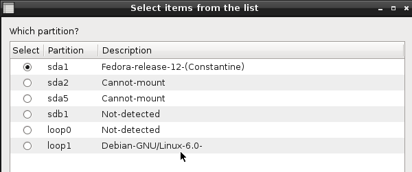

Chequeo del sistema de ficheros (Arreglo forzado) - Rescapp - Documentation
-
Paso 1Rescapp busca todas las particiones basandose en la información encontrada en el archivo: /proc/partitions. Si la partición contiene un archivo llamado: /etc/issue también obtendrá el nombre de la distribución.
-
Paso 2Rescatux te presenta las particiones encontradas en el Paso 1.Se pregunta:
Which partition?Es decir qué partición quiere chequear con arreglo automático. Se supone que ha de elegir la partición que quiere chequear con arreglo automático y pulsar el botón OK.La descripción se detalla como:
-
Distribution name: La partición raíz de tu distribución se ha detectado y está viendo su nombre.
-
Not detected: La partición se ha podido montar pero no hay un fichero /etc/issue en ela. Probablemente no es una partición raíz.
-
Can't mount:: La partición no ha podido ser montada. Puede que sea la partición que se quiera arreglar, otra que Rescatux no sea capaz de montar o bien una partición de intercambio (swap).

-
Paso 3Mientras el proceso de fsck se ejecuta el siguiente mensaje se muestra:Running forced filesystem check and fix

-
Paso 4
Se informa del proceso fsck..El mensaje se explica a sí mismo. Puede que obtenga:Success! Filesystem check with automatic fix was OK! :), que quiere decir que ha funcionadooFilesystem check with automatic fix went wrong! :( que quiere decir que algo ha ido mal.

-
Paso 5Deberías pulsar OK en la ventana Running forced filesystem check and fix.
-
Paso 6Un fichero de log llamado fsck.log.txt se puede encontrar en el directorio de logs del escritorio.